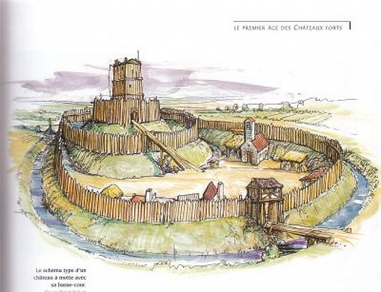

les limite de la motte feodale a été delimitées
en 1843
Au Moyen Âge, Bédée possédait une motte féodale, tour de bois entourée d'une palissade et construite sur un monticule de terre artificiel. Cette motte est toujours visible et est aujourd'hui accompagnée d'un jardin médiéval qui rappelle les jardins d'abbayes en carré agrémenté maintenant de jeux
